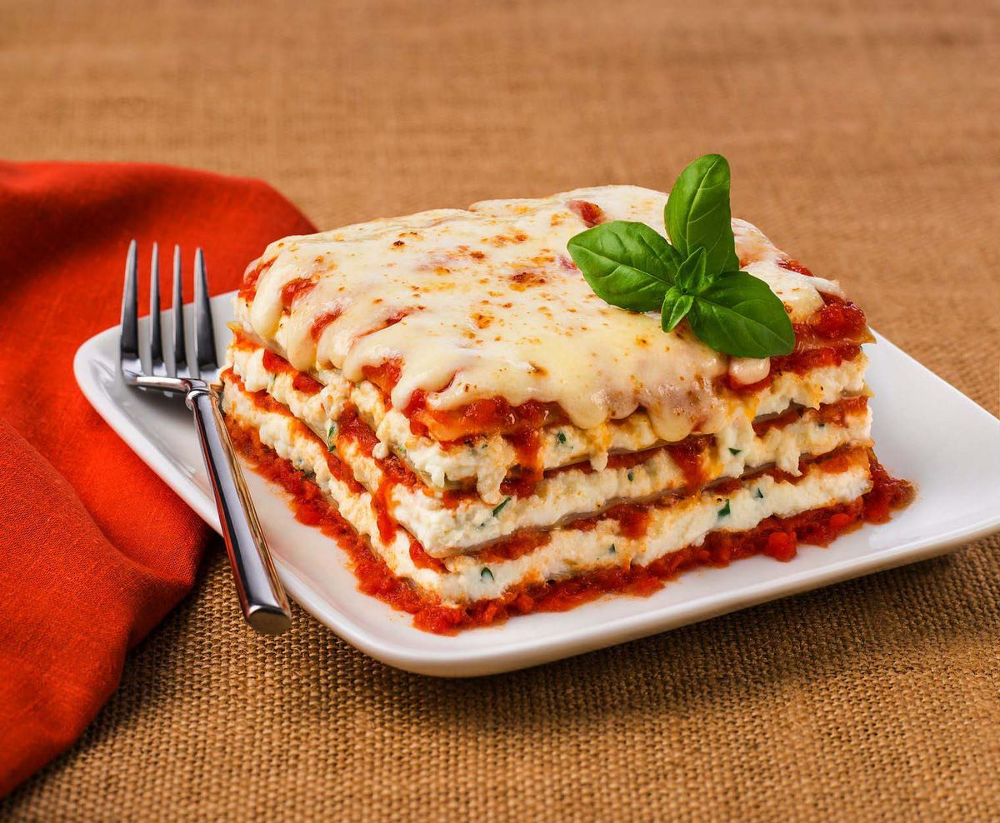

Lasagna

Description
Lasagne (US: /ləˈzɑːnjə/, also UK: /ləˈzænjə/,[1] Italian: [laˈzaɲɲe]; singular lasagna, Italian: [laˈzaɲɲa]) are a type of pasta, possibly one of the oldest types,[2] made of very wide, flat sheets. Either term can also refer to an Italian dish made of stacked layers of lasagne alternating with fillings such as ragù (ground meats and tomato sauce), vegetables, cheeses (which may include ricotta, mozzarella, and parmesan), and seasonings and spices, like Italian seasoning, such as garlic, oregano and basil.[3] The dish may be topped with grated cheese, which becomes melted after baking. Typically cooked pasta is assembled with the other ingredients and then baked in an oven. The resulting casserole is cut into single-serving square portions.
Ingredients:
- 1 pound lean ground beef
- 1 (32 ounce) jar of spaghettie sauce
- 32 ounces cottage cheese
- 3 cups shredded mozzarella cheese
- 2 eggs
- 1/2 cups grated Parmesan cheese
- 2 teaspoons dried parsley
- salt to taste
- ground black pepper to taste
- 9 lasagna noodles
- 1/2 cup water
Steps:
- In a large skillet over medium heat brown the ground beef. Drain the grease. Add spaghetti sauce and simmer for 5 minutes.
- In a large bowl, mix together the cottage cheese, 2 cups of the mozzarella cheese, eggs, half of the grated Parmesan cheese, dried parsley, salt and ground black pepper.
- To assemble, in the bottom of a 9x13 inch baking dish evenly spread 3/4 cup of the sauce mixture. Cover with 3 uncooked lasagna noodles, 1 3/4 cup of the cheese mixture, and 1/4 cup sauce. Repeat layers once more: top with 3 noodles, remaining sauce, remaining mozzarella and Parmesan cheese. Add 1/2 cup water to the edges of the pan. Cover with aluminum foil.
- Bake in a preheated 350 degree F(175 degrees C) oven for 45 minutes. Uncover and bake an additional 10 minutes. Let stand 10 minutes before serving.